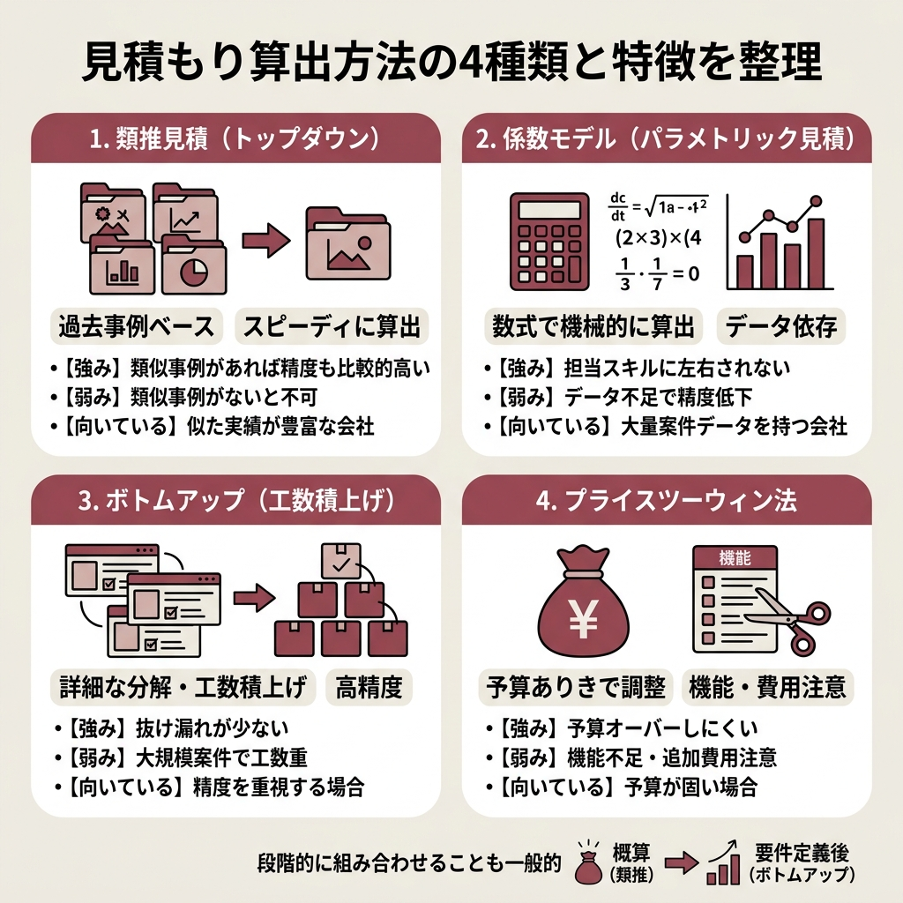
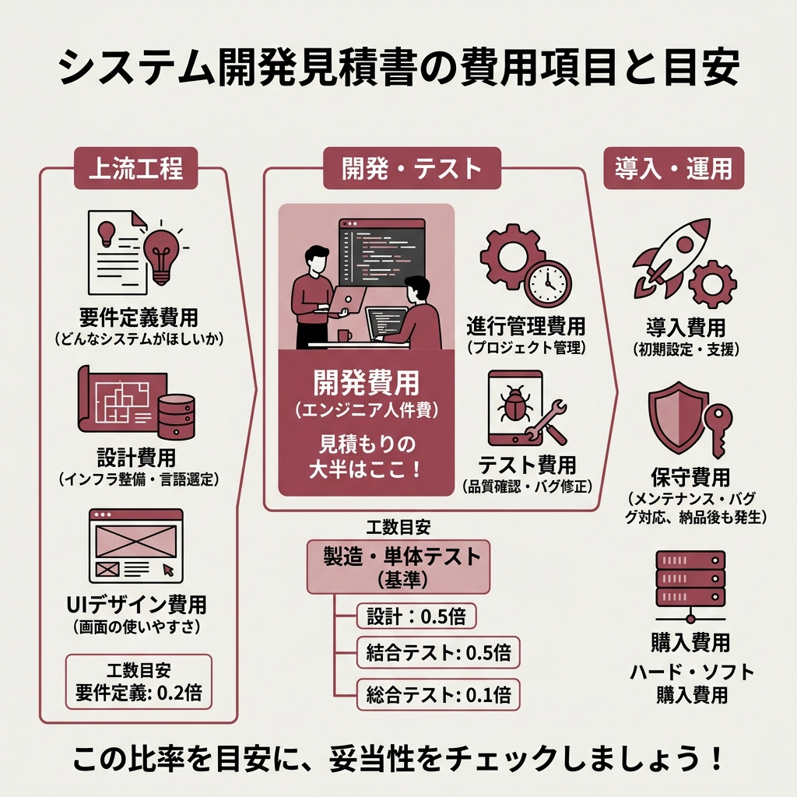
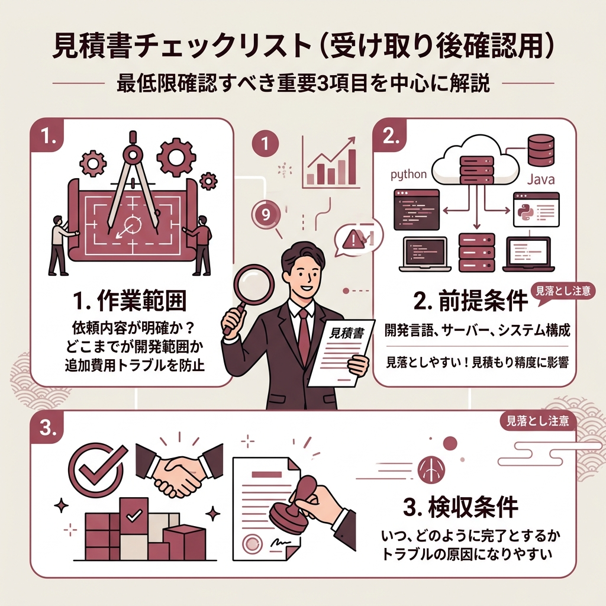

「見積書が3社から届いたのに、金額がバラバラで比較のしようがない」。
システム開発を初めて外注するとき、多くの方がぶつかる壁です。
開発会社ごとに項目名も粒度も違うので、どこをどう見ればいいか戸惑うのは当然だと思います。
この記事では、見積もりの「算出方法」「費用項目」「チェックポイント」を整理しました。
2026年4月時点の情報をもとに、発注者目線で押さえておきたいポイントをまとめています。
見積書をもらったんですが、項目が多すぎて何から見ればいいかわからなくて…
まずは「算出方法」と「費用項目」の基本を押さえましょう。そのうえでチェックリストを使えば、かなり見通しが良くなりますよ。
なぜシステム開発の見積もりはこんなに読みづらいのか。
理由を大きく2つに分けて整理します。
システム開発には、ウォーターフォール型やアジャイル型など複数の進め方があります。
どの手法を採用するかで、見積もりの構成がガラッと変わります。
ウォーターフォール型なら「要件定義→設計→開発→テスト→納品」と一直線に進みます。
アジャイル型は短いサイクルを繰り返すので、工程の切り方自体が別物です。
つまり、同じシステムでも「どう作るか」によって見積書の形が変わります。
「設計費用」ひとつとっても、基本設計と詳細設計を分ける会社もあれば、まとめて1行にする会社もあります。
エンジニアの人数やスキルレベル、下請けの有無で単価も大きく変わります。
同じシステムの開発を頼んでも、会社ごとに金額が違うのはこうした背景があるからです。
ちなみにこの問題、調べた記事のほぼ全部が言及していました。

上位記事のほぼすべてが取り上げていた算出方法を5つ、まず比較表にしました。
それぞれの特徴を知っておくと、開発会社に「どの方法で見積もりましたか？」と聞いたときに話が通じやすくなります。
| 算出方法 | メリット | デメリット |
|---|---|---|
| 類推見積（トップダウン） | 過去事例ベースで素早く出せる | 類似案件がないと使えない |
| ボトムアップ（工数積上げ） | 作業単位で積むので抜け漏れが少ない | 大規模案件には不向き |
| 係数モデル（パラメトリック） | 担当者の経験に左右されにくい | 蓄積データが少ないと精度が落ちる |
| FP法 | 機能単位で定量化できる | 計測に専門知識が必要 |
| プライスツーウィン法 | 予算オーバーを防ぎやすい | 機能不足のリスクがある |
過去の類似プロジェクトを参考にして金額を算出する方法です。
実績がベースなので、ほかの方法よりスピーディーに見積もりが出ます。
予想工数や費用に大きなズレが出にくいのも強みです。
ただし「初めてのシステム開発で類似案件がゼロ」なら、そもそも使えません。
過去の蓄積があって初めて成り立つ手法です。
完成するシステムの構成要素を洗い出して、作業ひとつずつの工数を積み上げていく方法。
抜け漏れが発生しにくく、精度が高いのが最大の特徴です。
個人的には、この方法が一番「何にいくらかかるか」がわかりやすいと感じました。
ただし、大規模プロジェクトだと全タスクの工数を事前に見積もるのが現実的に難しくなります。
特定の数式モデルを使って、各作業を数値化する方法です。
たとえば「製品Aを1個作るコストが500円なら、100個で5万円」という考え方に近いイメージ。
担当者の知識や経験に結果が左右されにくいのがメリットです。
反面、蓄積データやサンプル数が少ないと精度が極端に下がります。
システムの機能ごとにポイントを付けて、合計ポイントからコストを出す手法です。
機能の数や複雑さを定量的に測れるので、客観性のある見積もりを出しやすくなります。
ただ、FPの計測自体に専門知識がいるため、発注者だけでは扱いにくい面があります。
上位記事の中でも、FP法まで踏み込んで解説している記事は少数派でした。
クライアントの予算に合わせて見積もりを組み立てる方法です。
予算ベースで逆算するので、オーバーする心配は少なくなります。
ただし、予算内に収めるために機能が削られるリスクは避けられません。
不足を補う二次開発が発生すれば、結局追加コストがかかります。
うちは初めての開発なので過去事例がありません。どの方法が合ってますか？
過去事例がないなら、ボトムアップで工数を積み上げてもらうのが無難です。作業ごとの内訳が見えるので、比較検討もしやすくなりますよ。

見積書を開くと、ずらっと費用項目が並んでいて圧倒されるかもしれません。
「上流工程」「開発・テスト」「導入・運用」の3グループに分けると、かなり読みやすくなります。
要件定義費用は「どんなシステムがほしいか」「何を解決したいか」をまとめる作業にかかるコストです。
システムの方針や大まかな仕様を決めるフェーズで発生します。
設計費用は、サーバーなどのインフラ整備や開発言語の選定など、設計環境を整えるための費用です。
UIデザイン費用もこの段階で計上されるケースが多いです。
ユーザーが操作する画面の見やすさ・使いやすさを設計する作業に充てられます。
開発費用はエンジニアの技術費・人件費で、見積もり全体の中で最も大きなウェイトを占めます。
「見積もり金額の大半はここ」と思っておいてください。
進行管理費用も確認しておきましょう。
プロジェクト管理費やディレクション費と表記されるケースもあります。
テスト費用は結合テストや総合テストなど、品質を確認するためのコストです。
導入費用は、完成したシステムの初期設定にかかるコストです。
操作マニュアルの作成や説明会が必要なら、導入支援費用が別途発生します。
サーバーやソフトウェアを新たに購入する場合は、購入費用もプラスされます。
遠方の開発会社に依頼している場合は、打ち合わせの旅費・交通費用が計上されることも。
そして見落としがちなのが保守費用です。
メンテナンスやバグ修正、機能改修に対応する費用で、納品後もずっと発生し続けます。
製造・単体テストの工数を基準に、要件定義は0.2倍、設計は0.5倍、結合テストは0.5倍、総合テストは0.1倍で概算を出す
開発会社の概算見積もり手法例（Qiita掲載の見積書作成記事より）
この比率を知っておくと「設計費が開発費の半分くらいなら妥当だな」と判断できるようになります。
会社や案件によって比率は変わりますが、目安として頭に入れておくと便利です。
できれば3社以上に見積もりを依頼してください。
上位記事でもほぼ全員が同じことを言っていて、これはもう鉄則だと思います。

見積書が届いたら、次の9項目を上から順にチェックしてみてください。
調べていて一番見落としやすいと感じたのは「前提条件」と「検収条件」の2つです。
この2項目があいまいだと、あとから「こうなるはずだった」という食い違いが起きやすくなります。
前提条件はシステムの対象範囲や開発言語などの使用技術を指します。
ここが不明確だと、見積もり金額の正確性にも影響が出ます。
9項目全部チェックするのは正直大変そうです…
最低限「作業範囲」「前提条件」「検収条件」の3つだけでも確認しておけば、大きなトラブルはかなり防げますよ。
何から手をつければいいか迷う方向けに、5ステップで整理しました。
「どんなシステムが必要か」「何を解決したいか」を箇条書きレベルでまとめます。完璧でなくてOKです。
比較材料を確保するため、最低3社には声をかけましょう。
開発言語・使用HW/SW・対象範囲など、各社との認識を揃えたうえで見積もりを出してもらいます。
「何の作業にいくらかかっているか」を項目ごとに横並びで確認します。
金額差の根拠や内訳の詳細を具体的に聞くことが、失敗を防ぐ一番のコツです。
上位記事を横断して読んでみると、繰り返し登場する失敗パターンがあります。
調べた中で最も多かった失敗がこれです。
前提条件のすり合わせが不十分だと、開発途中で「この部分はこうなるはずだった」という食い違いが発生します。
修正のたびに追加コストが積み重なり、最終的に見積もりを大幅に超えてしまうケースがあります。
1社だけ極端に安いと、つい飛びつきたくなります。
でも、スキルの低いエンジニアがアサインされたり、テスト工程が省かれていたりする可能性も考えてみてください。
品質の問題で作り直しになれば、トータルコストはほかの会社より高くつきます。
開発言語やHW・SWの選定をあいまいにしたまま走り出すのも危ないパターンです。
途中で仕様変更が入るたびにコストが上がります。
事前のすり合わせに時間をかけたほうが、結果的に安くつくことが多いです。
ここまで算出方法やチェックリストを紹介してきましたが、最後に2つだけ補足します。
ひとつは、工数比率の目安を頭に入れておくことです。
設計費が開発費の50%程度なら妥当、要件定義が20%程度なら標準的。
この目安があるだけで、見積書の「なんか高くない？」という違和感に気づきやすくなります。
もうひとつは、概算見積もりに「完璧」を求めすぎないことです。
開発が進むにつれて金額が変動するのは普通のことです。
概算段階で大事なのは「大きくズレていないか」を確認すること。
細かい金額は、要件定義が固まった段階の本見積もりで詰めれば十分です。
結局、見積もりで一番大事なポイントって何ですか？
「前提条件の明確化」と「複数社比較」です。この2つを押さえるだけで、大きな失敗はかなり防げます。
正直、見積もりの読み方を知っているかどうかで、発注のストレスがまったく違うと思います。
この記事のチェックリストを手元に置いて、次の見積書をじっくり読み比べてみてください。